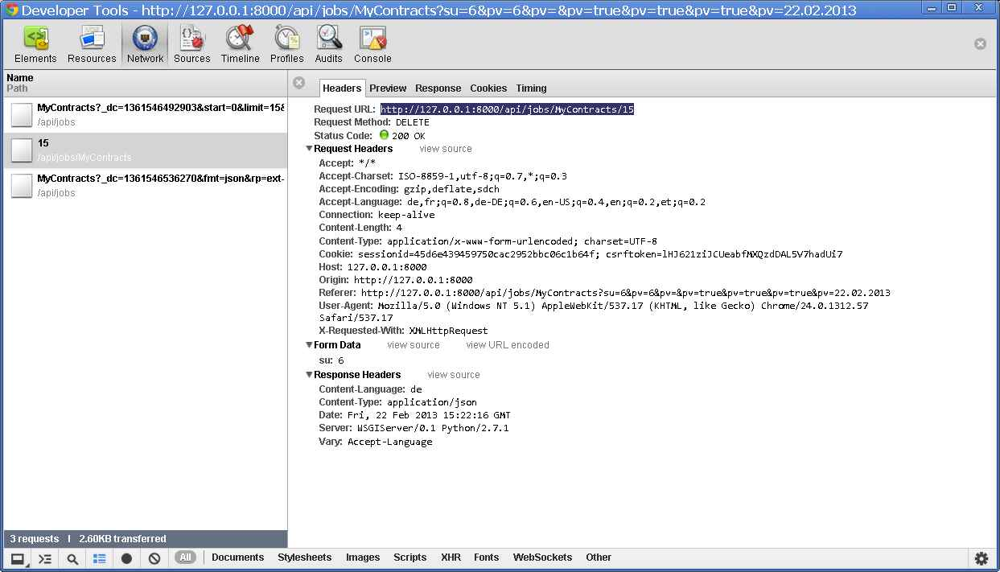

20130222¶
Release¶
So, now finally I can release the new version in Eupen:
- Release notes: Lino /releases/1.5.10 Welfare /releases/1.0.13
While trying to make it offcial by uploading it to PyPI, I got:
Submitting docs/dl\lino-1.5.10.tar.gz to http://pypi.python.org/pypi
Upload failed (401): Incorrect password
Yes of course, I had changed my password in the web interface
after the attacks from
January 2013.
But where does my setuptools store my old password?
Answer: it’s in the .pypirc file which is in my $HOME directory.
Next problem:
Submitting docs/dl\lino-1.5.10.tar.gz to http://pypi.python.org/pypi
Upload failed (502): Bad Gateway
This problem occured once, but the second attempt passed.
UnresolvedModel instance has no attribute ‘Xyz’¶
Another surprise during
watch_tim:
ERROR UnresolvedModel instance has no attribute 'DoesNotExist'
Traceback (most recent call last):
File "t:\hgwork\welfare\lino_welfare\modlib\pcsw\management\commands\watch_tim.py", line 865, in watch
process_line(ln)
File "t:\hgwork\welfare\lino_welfare\modlib\pcsw\management\commands\watch_tim.py", line 837, in process_line
m(**kw)
File "t:\hgwork\welfare\lino_welfare\modlib\pcsw\management\commands\watch_tim.py", line 409, in PUT
obj = self.get_object(kw)
File "t:\hgwork\welfare\lino_welfare\modlib\pcsw\management\commands\watch_tim.py", line 618, in get_object
except Client.DoesNotExist:
AttributeError: UnresolvedModel instance has no attribute 'DoesNotExist'
This bug is due to my change to
resolve_model
two days ago:
Theresolve_modelfunction may not use seed_cache=True (which causes Django to populate the models cache before looking for the model) since we want to have it usable at the top-level ofmodelsmodules. Which is whatlino.projects.homeworkschooldid. This caused a recursive populate, leading to very confusing error messages.
The easiest workaround is to add the following line somewhere before the first call:
settings.LINO.startup()
Should I make the strict=True as default? No, because this would raise an ImportError instead of returning UnresolvedModel.
More bugs¶
- Some more edge cases occured in
watch_tim. Added them towatchtim_tests. - When manually creating a Coaching, the default value for the user field wasn’t correctly set to the requesting user (leading to a “DoesNotExist at /api/pcsw/CoachingsByClient” traceback).
Deleting a UserAuthored as somebody else¶
Lino had a problem when a user working as somebody else tried to delete a UserAuthored record of this other user. The button was enabled, but after clicking and confirming it you nevertheless got a warning “You have no permission to delete this row.”.
The picture shows what happens:
{kind=link}
The client correctly sends an HTTP DELETE with su=7 as form data
(7 being the id of the substituted user in our example),
but the server didn’t yet parse any data in the body
of DELETE requests. Now it does.